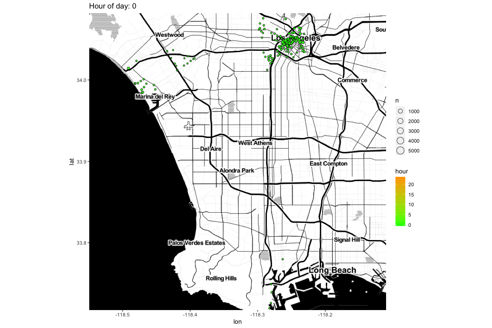
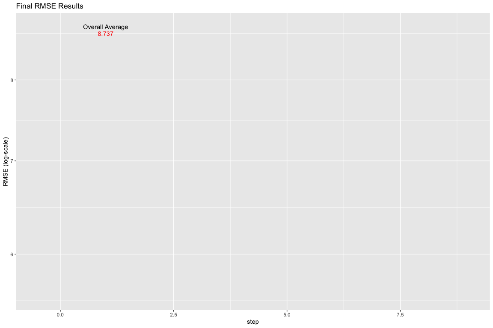

Los Angeles Metro Bike Share Analysis & Predictive Model
Daniel Romotsky
11/30/2019
Introduction
As an LA native, I know that it is a driver’s city. Traffic is always expected and road rage is narrowly avoided daily. Up until the 2010’s, you had to own a car to get anywhere. However, tech and the share economy has started to change that assumption, with Uber and Lyft, more accurate bus times, delivery services, and flexible work making it somewhat easier to get to where you need to be.
Of all the new advancements, the greenest opportunity for transportation is city bike share programs, which seem to now be available in most metropolitan cities. When I moved back to Los Angeles, I was quite surprised how many bikers there were on the road. I’m an avid biker myself and wanted to learn more about the bike share program in the city. With minimal research, I found that the LA Metro dedicated a portion of it’s website to Bike Share, including historical rider data for public consumption.
The aim of this project is to leverage this data to analyze bike share rider behavior, find patterns, and create a model that will predict the rider volume across the city.
Outline
- Get the Data
- Exploratory Analysis
- Pre-processing/data-cleansing
- Pull in other factors/variables
- Predictive Model
- Model Results
- Conclusion
Note that much of the code has been suppressed for ease of reading. Please refer to the r code for more-detailed explanations.
Also, in order to run the full R code, you will need to input your own Google Maps API key. More info on how to do this can be found here.
Get the Data
There are various csv files provided at https://bikeshare.metro.net/about/data/
The files types are
Trip Data
Station Lookup
To get the data, I used the rvest and magrittr packages & followed these steps
Read the html code on BikeShare’s About page: https://bikeshare.metro.net/about/data/
From inspecting the page, I know that the data file names live in the HTML class titled a. I save the respective nodes.
Using the stringr package, I then strip out the names I want.
Sample of the data nodes on the page:
## [1] "2019 Q3 (July – September)" "2019 Q2 (April – June)"
## [3] "2019 Q1 (January – March)" "2018 Q4 (October – December)"
## [5] "2018 Q3 (July – September)" "2018 Q2 (April – June)"And the sample of file names:
## [1] "https://bikeshare.metro.net/wp-content/uploads/2019/10/metro-bike-share-trips-2019-q3-1.zip"
## [2] "https://bikeshare.metro.net/wp-content/uploads/2019/08/metro-bike-share-trips-2019-q2.csv.zip"
## [3] "https://bikeshare.metro.net/wp-content/uploads/2019/04/metro-bike-share-trips-2019-q1.csv.zip"
## [4] "https://bikeshare.metro.net/wp-content/uploads/2019/01/metro-bike-share-trips-2018-q4.csv.zip"
## [5] "https://bikeshare.metro.net/wp-content/uploads/2018/10/metro-bike-share-trips-2018-q3.csv.zip"
## [6] "https://bikeshare.metro.net/wp-content/uploads/2018/08/metro-bike-share-trips-2018-q2.csv.zip"- I then download the zipped files to my local drive and unzip them.
- The names in each file don’t exactly match up, so I created a short function to line everything up.
df_final <- data.frame()
for (i in 1:length(df)){
df_temp <- df[[i]][c(1:14)]
names(df_temp) <- c("trip_id", "duration", "start_time", "end_time", "start_station_id",
"start_lat", "start_lon", "end_station_id", "end_lat",
"end_lon", "bike_id", "plan_duration", "trip_route_category", "passholder_type")
df_final <- rbind(df_final, df_temp)
}- Here’s the final bike riding data set from the site:
## Observations: 853,813
## Variables: 14
## $ trip_id <int> 17059131, 17059130, 17059129, 17059128, 1705…
## $ duration <int> 480, 720, 1020, 300, 300, 1200, 720, 2880, 2…
## $ start_time <chr> "1/1/2017 0:15", "1/1/2017 0:24", "1/1/2017 …
## $ end_time <chr> "1/1/2017 0:23", "1/1/2017 0:36", "1/1/2017 …
## $ start_station_id <int> 3030, 3028, 3027, 3007, 3007, 3066, 3029, 30…
## $ start_lat <dbl> 34.05194, 34.05832, 34.04998, 34.05048, 34.0…
## $ start_lon <dbl> -118.2435, -118.2461, -118.2472, -118.2546, …
## $ end_station_id <int> 3029, 3028, 3018, 3031, 3031, 3055, 3079, 30…
## $ end_lat <dbl> 34.04885, 34.05832, 34.04373, 34.04470, 34.0…
## $ end_lon <dbl> -118.2464, -118.2461, -118.2601, -118.2524, …
## $ bike_id <chr> "6220", "6351", "5836", "6142", "6135", "652…
## $ plan_duration <int> 30, 0, 0, 30, 30, 0, 0, 0, 0, 0, 0, 30, 0, 0…
## $ trip_route_category <chr> "One Way", "Round Trip", "One Way", "One Way…
## $ passholder_type <chr> "Monthly Pass", "Walk-up", "Walk-up", "Month…- Now let’s add some more vars for easier analysis, starting with the dates and times. I’ve created new variables for YYYY-MM-DD and time using the Lubridate package.
library(lubridate)
bike_data <- df_final %>% mutate(
start_time = parse_date_time(start_time, orders = c("Ymd HMS", "mdY HM")),
end_time = parse_date_time(end_time, orders = c("Ymd HMS", "mdY HM")),
start_date = ymd(as_date(start_time)),
end_date = ymd(as_date(end_time)))- Now let’s pull in the station lookup table.
station_index <- str_detect(html_text(nodes), "Station Table")
html_text(nodes)[station_index]
html_attr(nodes, "href")[station_index]
station_url <- html_attr(nodes, "href")[station_index]
station_url
download.file(station_url, "station.csv")
station_lookup<- read.csv("station.csv", stringsAsFactors = FALSE)We bring that into the data set, joined by start and end station. Then make some updates to variable naming.
Data cleansing #1: According to the website where this data was pulled, “Virtual Station” is used by staff to check in or check out a bike remotely for a special event or in a situation in which a bike could not otherwise be checked in or out to a station. I also needed to ensure each station has uniform sets of latitude and longitudinal coordinates. I found that one station changed coordinates slightly in 2018, which threw off my analysis, so I went in an aligned it.
Exploratory Analysis
Time-based
- We see a clear increase in rides over time
- It’s not surprising to see that rides are highest during the summer:
Station performance
Each station rolls into a larger region around the city of Los Angeles:
Obviously the most rides begin in Downtown LA. We’ll use free scales and view over months so that we can analyze the differences in distribution by region
The regions all follow similar distributions - increases in the summer, however there are some regions that have unknown regions or very low ride counts. Have bikes only been available for short periods of time in different regions? This can be viewed in two ways.
Time-series view of each region
Heatmap view of each region It’s a bit more clear of when each station was available with a heatmap:
More data cleansing #2 ! Because North Hollywood region is so new and Pasadena ceased operations, I will remove both for the predictive model. NAs and Free Bikes will be omitted from further analysis as well.
Spatial/Mapping Data & Analysis
Let’s look at some spatial data to help visualize movement of these bike rides. I used the ggmap package, which integrates with a Google Maps API key. I can then plot point directly on a map, using the latitude and longitude coordinates from the data set.
Note that you will need to input your own key in order to run this mapping script.
Main areas of operation are in Downtown LA, Santa Monica, and Long Beach.

The data set provides a start station and an end station, which allows me to look at general routes people take on their shared bikes. As mentioned previously, the three main regions are Downtown, Santa Monica, and Long Beach… and for those familiar with LA will know that they are nowhere near each other! Using the geosphere package…
## Distance from DTLA and Long Beach is about 35060.06 meters or 21.78531 miles!## Distance between DTLA and Santa Monica is about 21185.24 meters or 13.1639 miles!## Distance between Long Beach and Santa Monica is about 34268.44 meters or 21.29342 miles!Surely, noone is crazy enough to bike between regions… right? Wrong!
## Apparently, there are 500 rides that went from one region to the other. The percentage of rides out of the total is 0.0637%
## Where are they starting and ending?It looks like most of them originated in DTLA. However, this static visualization is rather tough to understand. Side note about myself: I am really into animation and video production. A true novice in these fields, I’ve made a few animated shorts and parody videos for friends and families. I also love being analytical and got into data visualization and analytics because it’s a great blend of both sides of the brain. However, I didn’t think there was opportunity to infuse movement of data in a professional field until I learned about the… gganimate package - this is developed to work in tandem with ggplot functions to create frames of graphs which shows change over time. I will use this extensively for any animated graphics you see moving forward. So… where are these bikers heading?
The majority of these over-achievers are heading to or from downtown - likely for work. Very few of the long rides are along the coast (SM to LB) since the Marvin Braude Bike Trail ends at Torrance - well north of Long Beach.
{kind=link}
Let’s look a little closer at the rides within each region.


Are there any hourly trends that we can see? Again, I will use the lubridate package to parse the hour, and gganimate to visualize the trends, if any.

A heatmap of hours by station doesn’t really show any large trends.
Furthermore, looking at boxplots of hourly rides by stations, hourly data will not be a really solid predictor.
Hours will not be used in the predictive model.
Day of week
What can the day of week tell us?
There’s nothing really discernible here, but if you recall, we know that ride behavior is different by region. Splitting this view out by region shows a clear difference in the rides.
There are more weekend bike riders in Westside and Long Beach, since that’s where the fun is at… on the beach! It’s pretty apparent that bikers from DTLA are commuters, versus Westside and Port of LA, which are more popular on the weekends.
So far, I’ve explored date-based trends and have found that month and day of week + region will be useful predictors in our model. One reason why certain months have more or less rides is due to temperature. Is there correlation between bike rides and temperature?
Temperature
The data set from Bike Share does not include temperature. Fortunately, there’s an R package called “GSODR” that I’m trying out.
To map the temp data into the bike info, I had to match the weather station IDs with the start_regions. It took a bit of inspection of the station names, but I found:
## # A tibble: 8 x 3
## # Groups: NAME [8]
## NAME STNID n
## <chr> <chr> <int>
## 1 BURBANK-GLENDALE-PASA ARPT 722880-23152 1417
## 2 DOWNTOWN L.A./USC CAMPUS 722874-93134 1416
## 3 LONG BEACH / DAUGHERTY FIELD / AIRPORT 722970-23129 1418
## 4 LOS ANGELES INTERNATIONAL AIRPORT 722950-23174 1418
## 5 SANTA MONICA MUNI AIRPORT 722885-93197 1418
## 6 SANTA MONICA PIER 994028-99999 354
## 7 VAN NUYS AIRPORT 722886-23130 1417
## 8 WHITMAN AIRPORT 745057-53130 1385## [1] "The names were pretty clear for me to align to my 3 regions:"## start_region sid
## 1 DTLA 722874-93134
## 2 Port of LA 722970-23129
## 3 Westside 722885-93197## Observations: 88,704
## Variables: 18
## $ start_region <chr> "DTLA", "DTLA", "DTLA", "DTLA", "DTLA", "DTLA", "D…
## $ YEARMODA <date> 2016-10-01, 2016-10-02, 2016-10-03, 2016-10-05, 2…
## $ TEMP <dbl> 22.8, 20.1, 19.1, 19.0, 19.8, 23.1, 23.7, 22.1, 18…
## $ DEWP <dbl> 15.6, 14.9, 11.4, 13.4, 12.8, 6.1, 7.1, 11.6, 14.7…
## $ SLP <dbl> 1014.1, 1013.6, 1014.2, 1012.2, 1012.0, 1011.3, 10…
## $ STP <dbl> 7.7, 7.3, 7.7, 5.7, 5.6, 4.9, 4.6, 7.3, 9.4, 10.5,…
## $ VISIB <dbl> 15.8, 15.8, 15.6, 16.1, 15.8, 16.1, 16.1, 16.1, 15…
## $ WDSP <dbl> 0.7, 0.7, 0.9, 1.1, 0.7, 0.4, 0.7, 0.8, 0.8, 0.5, …
## $ MIN <dbl> 18.3, 16.7, 15.0, 15.0, 13.9, 16.1, 15.6, 16.1, 16…
## $ MAX <dbl> 28.3, 30.0, 25.6, 25.6, 27.2, 32.2, 32.8, 32.8, 28…
## $ start_station <chr> "11th & Maple", "11th & Maple", "11th & Maple", "1…
## $ start_lat <dbl> 34.03705, 34.03705, 34.03705, 34.03705, 34.03705, …
## $ start_lon <dbl> -118.2549, -118.2549, -118.2549, -118.2549, -118.2…
## $ year <dbl> 2016, 2016, 2016, 2016, 2016, 2016, 2016, 2016, 20…
## $ month <ord> Oct, Oct, Oct, Oct, Oct, Oct, Oct, Oct, Oct, Oct, …
## $ day <int> 1, 2, 3, 5, 6, 7, 8, 10, 11, 12, 13, 14, 16, 17, 1…
## $ wday <ord> Sat, Sun, Mon, Wed, Thu, Fri, Sat, Mon, Tue, Wed, …
## $ n <int> 3, 1, 2, 4, 1, 3, 2, 1, 4, 5, 2, 1, 1, 1, 1, 1, 4,…The weather vars collected are as follows:
TEMP = Avg temperature for the day, in Celsius.
MIN = Min temperature for the day, in Celsius.
MAX = Max temperature for the day, in Celsius.
DEWP = Mean daily dew point converted to degrees C to tenths.
SLP = Mean sea level pressure in millibars to tenths.
STP = Mean station pressure for the day in millibars to tenths.
Let’s plot each of these temp metrics against # of rides.
Taking a closer look at STP and TEMP…
## Correlation between TEMP and rides is 0.1997316The correlation between TEMP and rides is not linear, yet there is a clear increase in rides until around 25 degrees Celsius, where it drops off afterwards… too hot!
Other metrics such as Visibility (VISIB) and STP do not have enough variance to spot a trend.
TEMP, MIN, and MAX show interesting, similar trends, but do we need all three?

## Correlation between TEMP and MAX is 0.9071299## Correlation between TEMP and MIN is 0.8978786Due to such a high correlation, using all three won’t have incremental impact on the model. So I will only use TEMP.
Let’s look at wind speed a bit closer, stratified by Temperature.
## # A tibble: 1 x 1
## corr_TEMP_WDSP
## <dbl>
## 1 0.0834Since the slopes are all over the place here, I do not see approximate bivariate normal distributions for WDSP versus rides when stratified by TEMP.
Building a Predictive Model
I will build a model to predict the number of rides per station on any given day. From the previous analyses, I will be using the variables that for the prediction that showed strong correlation with rides: *month, day of week, station, region, & TEMP.
The key will be the combination of start_station and the date.
Using the caret package, I split the oberservations into training and test sets. I will be setting aside 15% of the data for testing the model.
| start_region | YEARMODA | TEMP | WDSP | start_station | start_lat | start_lon | year | month | day | wday | n | key |
|---|---|---|---|---|---|---|---|---|---|---|---|---|
| DTLA | 2016-10-01 | 22.8 | 0.7 | 11th & Maple | 34.03705 | -118.2549 | 2016 | Oct | 1 | Sat | 3 | 11th & Maple_2016-10-01 |
| DTLA | 2016-10-02 | 20.1 | 0.7 | 11th & Maple | 34.03705 | -118.2549 | 2016 | Oct | 2 | Sun | 1 | 11th & Maple_2016-10-02 |
| DTLA | 2016-10-03 | 19.1 | 0.9 | 11th & Maple | 34.03705 | -118.2549 | 2016 | Oct | 3 | Mon | 2 | 11th & Maple_2016-10-03 |
| DTLA | 2016-10-05 | 19.0 | 1.1 | 11th & Maple | 34.03705 | -118.2549 | 2016 | Oct | 5 | Wed | 4 | 11th & Maple_2016-10-05 |
| DTLA | 2016-10-06 | 19.8 | 0.7 | 11th & Maple | 34.03705 | -118.2549 | 2016 | Oct | 6 | Thu | 1 | 11th & Maple_2016-10-06 |
| DTLA | 2016-10-07 | 23.1 | 0.4 | 11th & Maple | 34.03705 | -118.2549 | 2016 | Oct | 7 | Fri | 3 | 11th & Maple_2016-10-07 |
Quick inspection of the data sets.
Root Mean Square Error (AKA RMSE) will be the measure of accuracy of the model.
The calculation used here is \(\sqrt(1/n\sum_{1}^{n} (actualrides_{n} - predictedrides_{n})^2)\)
The RSME function has been saved for future use:
RMSE <- function(actual_rides, predicted_rides){
sqrt(mean((actual_rides - predicted_rides)^2))
}
# RMSEBuilding the model using …
Overall Average
## Has a RSME of 8.737111 which is not very good!##
## This means that the model is off by over 8.737111 rides per day per station.This is ok since it’s the baseline for the model. I will then add iteratively each variable into the model. The approach is to take the average at each variable roll-up and add as an adjustor to the overall average.
variable_lookup <- train %>% group_by(VARIABLE) %>% dplyr::summarise(p_variable = mean(n - mu))
st_lookup %>% arrange(desc(p_variable)) %>% head(10) %>% kable() #show highest hourly p
predict_variable <- mu + test %>% left_join(variable_lookup) %>% pull(p_variable)
RMSE(test$n, predict_variable) ## will give us the prediced errorStation Average
| start_station | p_station |
|---|---|
| Pop Hollywood Ciclavia Barnsdall Art Park Hub | 141.13896 |
| Mariachi Plaza | 135.13896 |
| Pop Hollywood Ciclavia Walk of Fame Hub | 81.13896 |
| CicLAvia Downtown Culver City Hub | 57.13896 |
| CicLAvia Palms Hub | 38.13896 |
| Ocean Front Walk & Navy | 26.12188 |
| 7th & Flower | 20.64098 |
| Ocean Front Walk & North Venice | 16.31231 |
| Main & 1st | 15.99331 |
| Union Station West Portal | 14.54277 |
## Has a RSME of 6.015118 which is already much better!Day of Week and Region
You may recall during the analysis, We found that there were distinct distributions by day of week across the regions. I will work this into our model.
## Has a RSME of 5.944418 which is slightly better.Temperature inclusion
I know weather is a factor, so let’s use TEMP
## Has a RSME of 5.797346 which is slightly better.Monthly Adjustment
## Has a RSME of 5.793406 which is a nice boost to error reduction.Yearly Adjustment
## Has a RSME of 5.707488 which is a nice boost to error reduction.Residuals
Where am I most off? Let’s inspect the daily trend by region. />
There are big misses in the predictions for days where the rides are abnormally high:
| start_region | YEARMODA | avg_resid |
|---|---|---|
| Port of LA | 2017-08-13 | 31.69 |
| Westside | 2018-09-03 | 17.54 |
| Westside | 2018-09-02 | 16.91 |
| DTLA | 2016-10-16 | 15.89 |
| Westside | 2018-08-05 | 13.74 |
| Westside | 2018-07-04 | 13.35 |
| DTLA | 2017-10-08 | 12.64 |
| DTLA | 2018-12-02 | 12.32 |
In doing a bit of research of what may have been going on for these dates, it became very apparent that Los Angeles is full of outdoor events. One that is very popular is
Ciclovia
Ciclovia “catalyzes vibrant public spaces, active transportation and good health through car-free streets.” They put on large biking events around the city. The past events align quite closely to some of these large residuals, so I will scrape the site and pull in the dates and locations of each.
| date | location |
|---|---|
| Sunday, October 06, 2019 | CicLAvia—Heart of LA | Celebrating UCLA100 |
| Sunday, August 18, 2019 | CicLAvia—Meet the Hollywoods |
| Sunday, June 30, 2019 | CicLAvia—Mid City Meets Pico Union |
| Sunday, April 28, 2019 | CicLAvia—Wilmington |
| Sunday, March 03, 2019 | CicLAvia - Culver City Meets Mar Vista + Palms |
| Sunday, December 02, 2018 | CicLAvia - Heart of LA |
I then clean up the dates and join it against our bike model data
| date | location | date2 | date3 |
|---|---|---|---|
| Sunday, October 06, 2019 | CicLAvia—Heart of LA | Celebrating UCLA100 | October 06, 2019 | 2019-10-06 |
| Sunday, August 18, 2019 | CicLAvia—Meet the Hollywoods | August 18, 2019 | 2019-08-18 |
| Sunday, June 30, 2019 | CicLAvia—Mid City Meets Pico Union | June 30, 2019 | 2019-06-30 |
| Sunday, April 28, 2019 | CicLAvia—Wilmington | April 28, 2019 | 2019-04-28 |
| Sunday, March 03, 2019 | CicLAvia - Culver City Meets Mar Vista + Palms | March 03, 2019 | 2019-03-03 |
| Sunday, December 02, 2018 | CicLAvia - Heart of LA | December 02, 2018 | 2018-12-02 |
## [1] "Comparing residuals for days with Ciclavia events vs all other days..."## # A tibble: 2 x 2
## cic avg_resid
## <chr> <dbl>
## 1 ciclavia days 7.22
## 2 non-ciclavia days 3.65So overall, the mean absolute residuals are almost twice as high during ciclavia days. However, note that these events aren’t usually across the whole city. Rather, these events are specific to certain areas…

We can now label the regions in which ciclavia would be impacting bike rides.
| date3 | location | start_region |
|---|---|---|
| 2019-10-06 | CicLAvia—Heart of LA | Celebrating UCLA100 | DTLA |
| 2019-04-28 | CicLAvia—Wilmington | Port of LA |
| 2019-03-03 | CicLAvia - Culver City Meets Mar Vista + Palms | Westside |
| 2018-12-02 | CicLAvia - Heart of LA | DTLA |
| 2018-09-30 | Celebrate LA! LA Phil 100 x CicLAvia | DTLA |
| 2018-04-22 | CicLAvia Heart of the Foothills | Westside |
| 2017-10-08 | CicLAvia - Heart of LA | DTLA |
| 2017-08-13 | CicLAvia - San Pedro Meets Wilmington | Port of LA |
| 2017-03-26 | CicLAvia - Culver City Meets Venice presented by Metro | Westside |
| 2016-10-16 | CicLAvia - Heart of LA | DTLA |
We can now add this as a new variable into the train and test data, joined off of date and region. Then use it as a predictor.
Viewing these events as labels in our original Residual view…
Now let’s add ciclavia into the prediction… This is a bit trickier than the other variables, given that the adjsutor should only apply to specific days and regions.
cicla_lookup2 <- train2 %>%
filter(!is.na(ciclavia_event)) %>% # just the ciclavia days in the region that is impacted
left_join(st_lookup) %>% left_join(region_wday_lookup) %>%
left_join(temp_lookup) %>% left_join(year_lookup) %>% left_join(month_lookup) %>%
group_by(start_station) %>% dplyr::summarise(p_cicla = (mean(n - mu - p_station - p_wday - p_temp - p_year - p_month))) %>% ungroup()| start_region | p_cicla |
|---|---|
| DTLA | 12.137175 |
| Port of LA | 19.653269 |
| Westside | 6.584454 |
We then create some if statements for the values that don’t exist for certain stations:
mutate(pred = ifelse(is.na(ciclavia_event),
p_station + p_wday + p_temp + p_year + p_month,
ifelse(is.na(p_cicla),
p_station + p_wday + p_temp + p_year + p_month,
p_station + p_wday + p_temp + p_year + p_month + p_cicla)))## Yields an RMSE of 5.659323 which is better!Looks better for those days!
The event anomalies are accounted for! We are very accurate at the daily-regional level, but pretty a miss at the more granular station level.
We can assume that residuals will be larger the more rides there are, so I’ve created a new metric that measures the relative residual against the number of rides:
Proportional Residual\(_{n}\) = \(|\)Residual Error\(_{n}\)\(/\)Number of rides\(_{n}\)\(|\).
In these cases of low daily rides, we should not use much of an adjustor other than the station average. This can be done with regularization!
Regularization, mount up!
{kind=link}
lambdas <- seq(0, 10, .10)
rmses <- sapply(lambdas, function(l){
predicted_ratings <- test2 %>%
left_join(st_lookup) %>%
left_join(region_wday_lookup) %>%
left_join(temp_lookup) %>%
left_join(month_lookup) %>%
left_join(year_lookup) %>%
left_join(cicla_lookup2) %>%
left_join(ciclavia2) %>%
mutate(pred = mu + ifelse(is.na(ciclavia_event),
p_station + (p_wday + p_temp + p_year + p_month)*(n/(n+l)),
ifelse(is.na(p_cicla),
p_station + (p_wday + p_temp + p_year + p_month)*(n/(n+l)),
p_station + (p_wday + p_temp + p_year + p_month + p_cicla)*(n/(n+l)))))%>%
pull(pred)
return(RMSE(predicted_ratings, test2$n))
} )## Best lambda to minimize RMSE: 2.2 for a minimum RMSE of 5.593044 !With regularization, we are able to reduce the effects of day of week+region, temperature, year, and month for the keys (station+day) that have very few rides. Let’s apply this updated model and save the predictions.
## Has a RSME of 5.593044 which is great!Model Results
After running different combinations of variables, the best model (that yields the lowest RMSE) used starting station with regularization on region/day of week, temperature, month, year, and ciclavia event. Here is the breakout of each iteration and the RMSEs.
| RMSE Results | |
|---|---|
| Overall Average | 8.737111 |
| Added Station | 6.015118 |
| Added Day of Week & Region | 5.944419 |
| Added Month | 5.793406 |
| Added Year | 5.707488 |
| Added Ciclavia Events | 5.659323 |
| Added Regularization | 5.593045 |

Conclusion
After incrementing new effects into the model, we found that adding regularization helped improve the Root Mean Square Error for variables other than Station. This was a pretty difficult model to build since I realized that the data set provided by Bike Share didn’t have all the crucial variables need to create an effective predictive model. Rather, we were only given the usage stats so we had to inspect and find outside variables that could impact the prediciton in a positive way. In this case, we found temperature and anomalous events such as Ciclovia to help with the prediction. This is probably true of any data set based on user usage of transportation. It is usually necessary to look to outside factors such as holidays, natural disasters, etc.
There are several limitation to consider with this model:
Bike availability - The bike share program has station throughout the city and have a finite number of bikes that could fit in each. There’s always a chance that demand (people who want to ride) outweighs the actual supply. There was no measurement of this factor in this data set and I’m not sure it actually exists in the real-world. - Furthermore, the number of rides are limited by how many bikes are put in that station on any given day. I am unaware of what sort of guidance the program uses to load bikes in each station, but if that could misinform the true level of riding demand. - The model did not factor in where bike rides ended. This will also impact the number of bikes available, hence skewing the historical data. *Other considerations** - Future Ciclavia events could be used to forecast ride demand, but we would need to make an educated guess as to which region will be impacted. There were several events that did not have a substantial impact on any of the stations; we could use historical performance to estimate such as Heart of LA always impacts DTLA. This is more of an art than a science. - Other city events such as marathons, holiday, and natural disasters were not included. Natural disasters generally cannot be predicted anyway, so would not work in this model regardless.
Thanks for reading!
Feel free to check out my Tableau Portfolio or add me on LinkedIn!